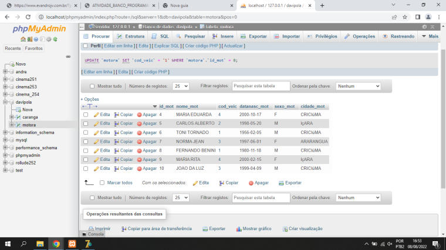
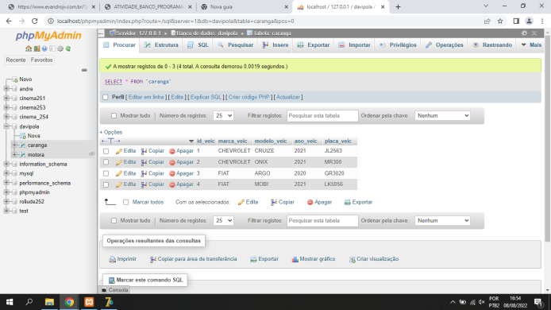
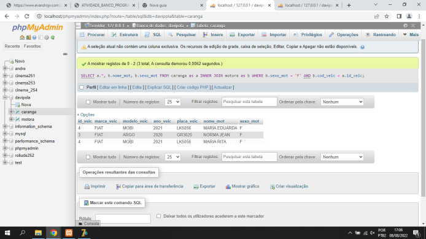
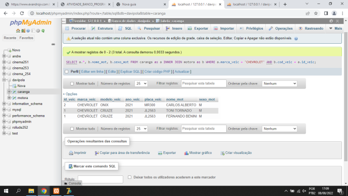

Trabalho de banco de dados
Arquivo Delphi
BaixarTodos os dados
select * from motora
select * from caranga
select * from motora WHERE sexo_mot = 'M' and cidade_mot = 'CRICIúMA'

SELECT a.*, b.nome_mot, b.sexo_mot FROM caranga as a INNER JOIN motora as b WHERE b.sexo_mot = 'F' AND b.cod_veic = a.id_veic
SELECT a.*, b.nome_mot, b.sexo_mot FROM caranga as a INNER JOIN motora as b WHERE a.marca_veic = 'CHEVROLET' AND b.cod_veic = a.id_veic
Na criação do banco de dados foi usado os seguintes comandos
Create DataBase davipola;
CREATE TABLE caranga (
id_veic int not null AUTO_INCREMENT,
marca_veic varchar(100),
modelo_veic varchar(50),
ano_veic year,
placa_veic varchar(50),
PRIMARY KEY(id_veic) );
CREATE TABLE motora (
id_mot int not null AUTO_INCREMENT,
nome_mot varchar(100),
cod_veic int,
datanasc_mot date,
sexo_mot ENUM("M","F"),
cidade_mot varchar(50),
PRIMARY KEY(id_mot),
FOREIGN KEY(cod_veic) REFERENCES caranga(id_veic));